|
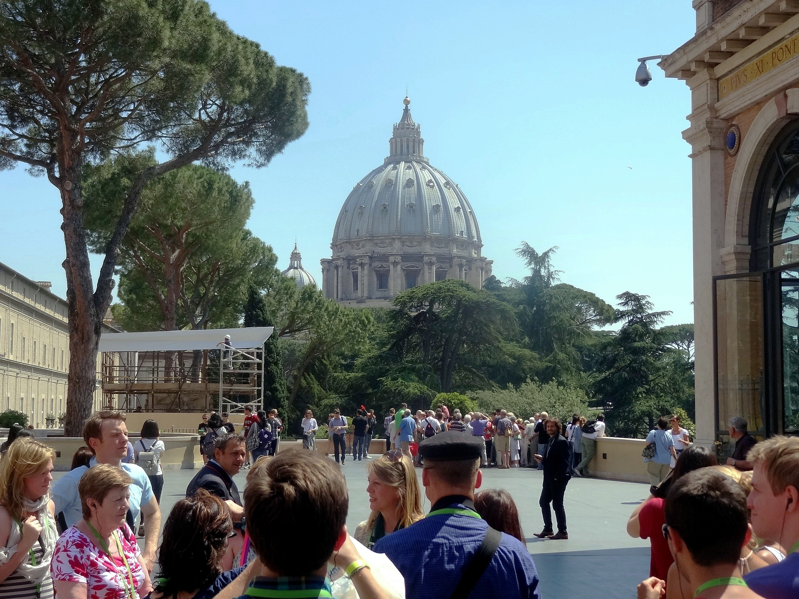 |
| Dome of St. Peter's Basilica as seen from the
Vatican Museum. Michaelangelo planned the dome to be hemispherical.
After his death, architects were unsure--there was no way to
calculate--whether the building would take the weight, and switched to a
lighter weight shape.
There used to be a so-called pleasure house in the Vatican for
recreations e.g. card games. It was abolished during the
counter-reformation as a PR liability. There was indeed a spiritual vibe inside the Vatican walls. For whatever reason, it was strongest in the open spaces and weaker in the buildings. |
|
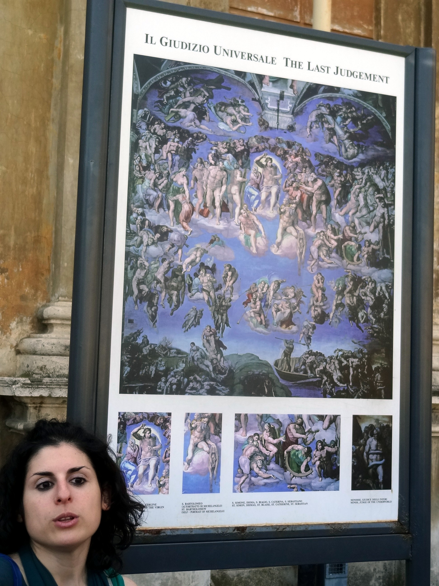 |
| The world's greatest tour guide. Even though she does this twice a day, she was as enthusiastic about the subject as though it was a one-off presentation. And knows art history inside out despite being a modern languages major. Turns out Michaelangelo was impossible to deal with--cranky, miserly (a bag of god was found under his bed postmortem). He wouldn't trust supplies or assistants that weren't from his native Florence. He also wouldn't let anyone see his work prior to completion--which could be as much as 4 years. (Vatican staff snuck in while he was on a buying trip home.) |
|
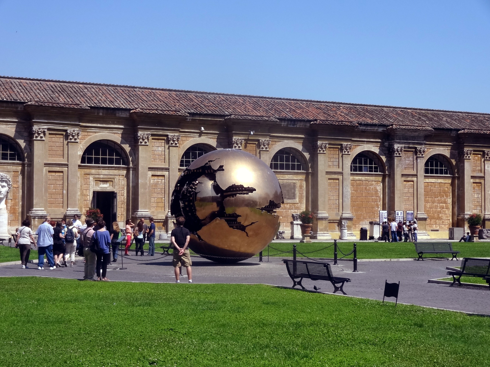 |
| Vatican museum plaza. This sculpture made me
realize the hidden message that is the reason for the museum's
existence. |
|
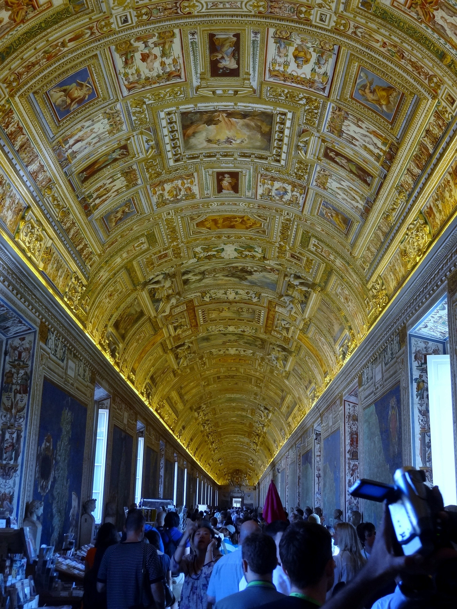 |
| The Vatican has frescoes the way the sky has stars. A friend asked how fast I'd gone into statue overload, but the frescoes got me first. All the statues were beige--the paint had worn off since classical times. Some had colored gem eyes, which added a lot and made me wonder--why not paint them? Afraid of getting it wrong? We know beige is wrong. One of the Greek statues had a missing arm. Michaelangelo reconstructed the arm's position (bent over the top of the head, slightly backwards) from the muscle tension in the shoulders. Later the arm was dug up. He got it right. (He also put Apollo's face on Jesus in the Sistine Chappel.) |
|
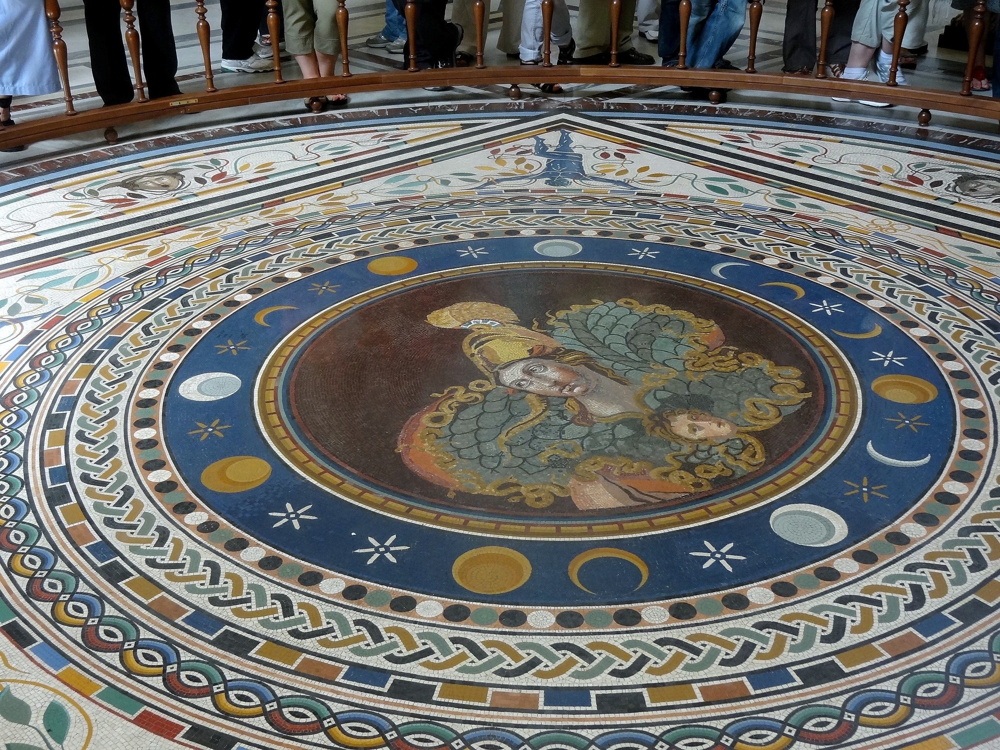 |
| Third century Roman mosaic of Athena with Medusa's head. This was often placed in front of doorways as protection. |
|
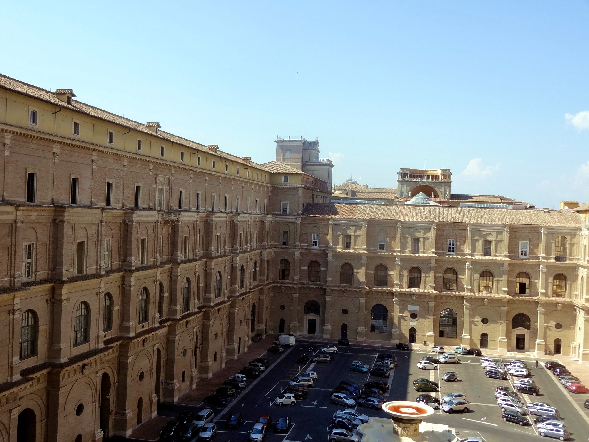 |
| Tower of the Winds (center). In the 1580s, someone sat here without a calculator and figured out how to reform the Julian calendar: Every year that is exactly divisible by four is a leap year, except for years that are exactly divisible by 100; the centurial years that are exactly divisible by 400 are still leap years. Somebody was really good at long division. Adopting the calendar required setting the date forward by two weeks, triggering "Give us back our 14 days" riots in England. Apparently event Protestants thought the Pope could shorten their lifetimes. |
|
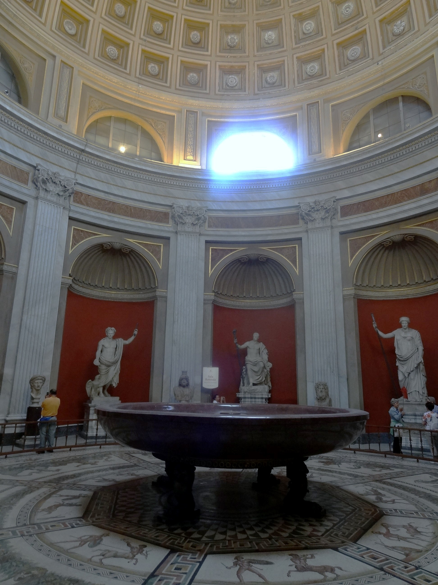 |
| At a glance, this had to be a sa'angreal. But it was only Nero's bath tub. (I saw Napoleon's in Firenze. It was smaller.) |
|
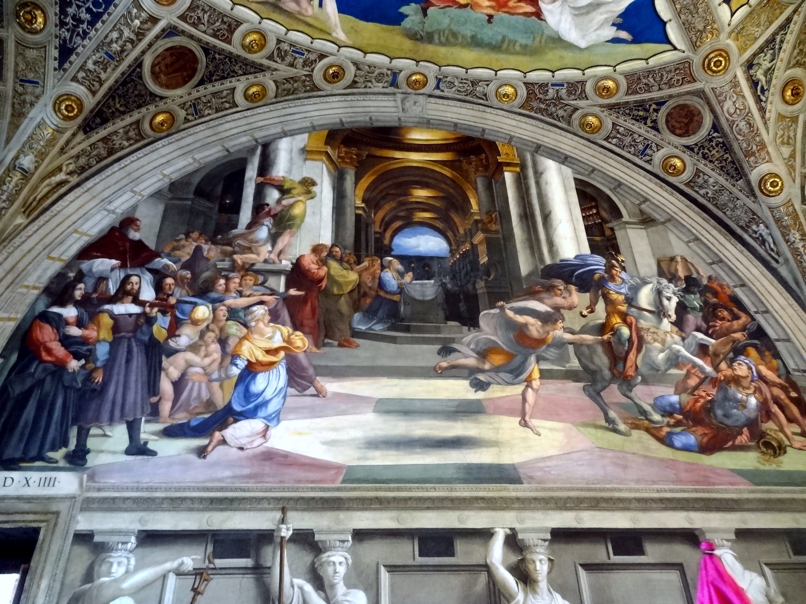 |
| Renaissance art was done on a fixed price, fixed schedule basis with the client dictating the subject matter. Artworks often had a social or political agenda. This fresco shows angels descending to punish the men who stole gold from the church (right front). To make the point that this still happens, the Pope who commissioned the fresco had himself being carried in on a palanquin (left front). Rafael painted himself looking back at the viewer, as he often did (purple robe, front left). |
|
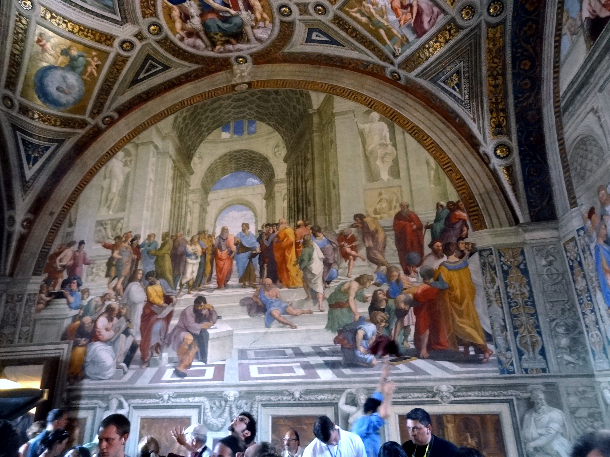 |
| This allegory of philosophy shows Plato (rear center, orange robe) pointing up--it's the ideas! Next to him in blue is Aristotle pointing down--it's the objects! So many of the frescos gave me story ideas--altenerate interpretations of what's going on in the painting. When I finally retire to begin my career as the world's next great fantasy writer, I'll come here if I ever run out of ideas. Below it was graffiti scratched in the paint by German soldiers in 1535 (the Pope escaped through a secret passage). |
|
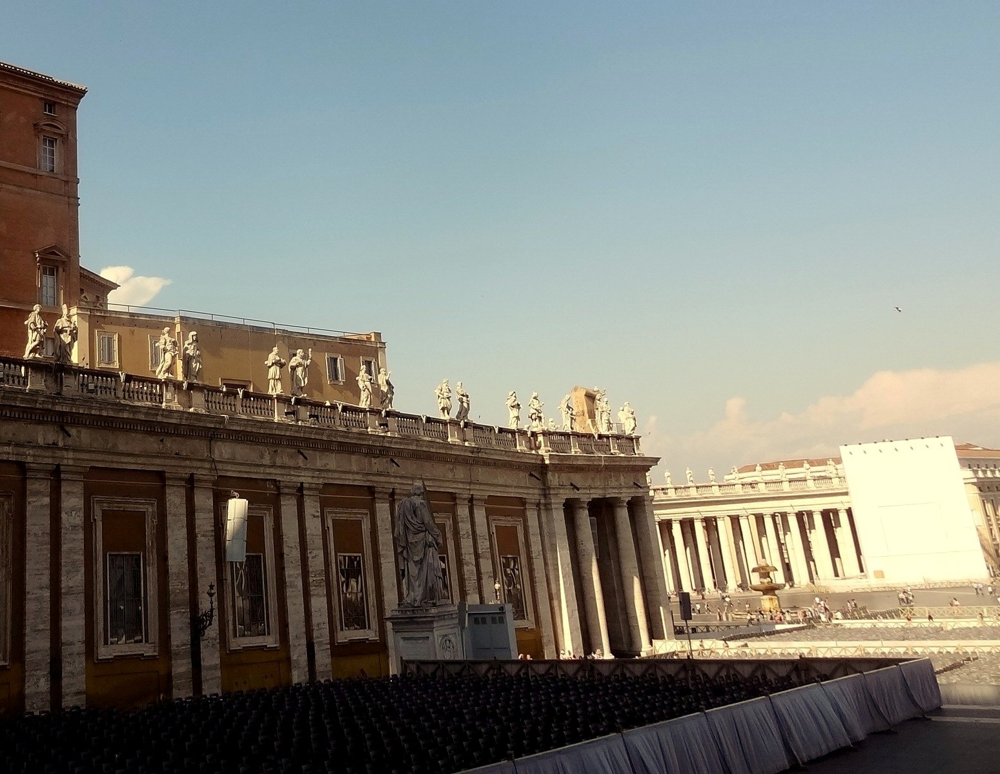 |
| The Pope lives in the apartments in the center (above statues, below tower). I decided that he had enough on his plate, so I didn't drop in to remind him that the scientific community has never really forgiven that Galileo thing. St. Peter's square at the right, Basilica of St. Peter behind. |
|
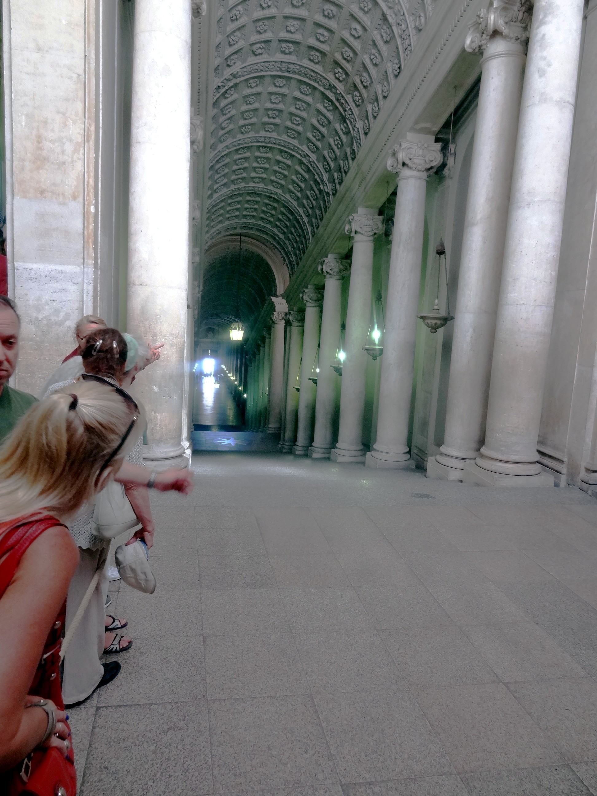 |
| Another bit of political art. Visitors were
received in this hall, which uses a trick of perspective to appear much
longer than it really is. Sistine chappel was next. They don't allow
pictures, allegedly because the UV in the flash degrades the pigments.
To be honest, the ceiling didn't do that much for me. Other people
have found it the high point of the tour, but I much preferred the stuff
you can photograph. (Maybe photograph. Since coming back I've been told
that I shouldn't actually have been taking pictures.) Turns out a
jealous rival set Michaelangelo up to fail by persuading Clement II to
give him the commission for the Sistine chapel--thinking that any
project that large was bound to fail. In this case, Michaelangelo
argued that he was a sculptor not a painter, and that if he had to
paint, he'd choose his own subject matter. Since was a ploy, he got to. After a Vatican official criticized Michaelangelo for nudity and "scandalous positioning" of bodies, he painted the guy with donkey ears at the Judge of Hades. Pope Julius II claimed to be powerless to intervene. |
|
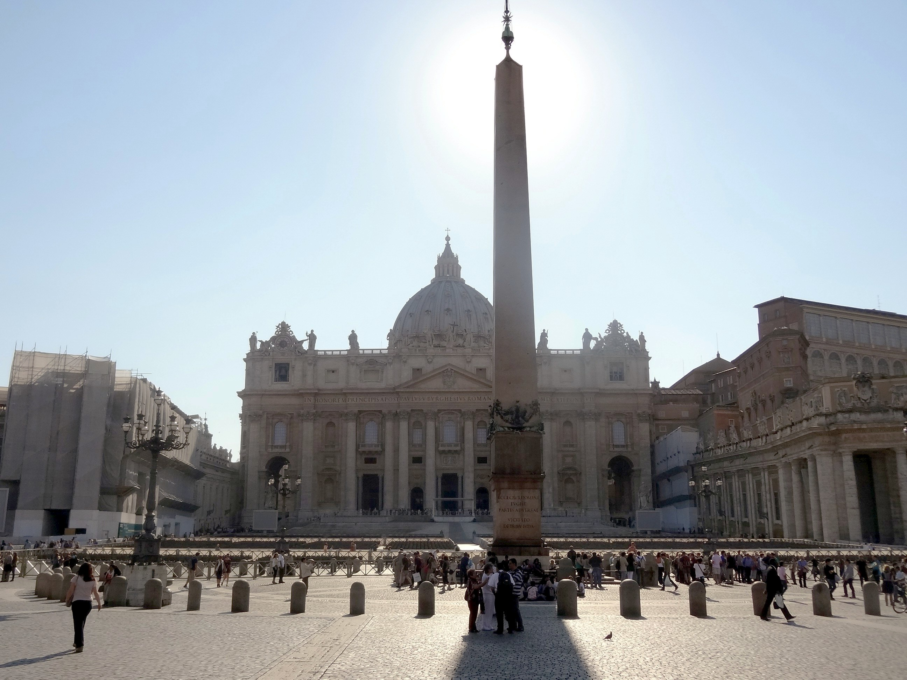 |
| St. Peter's square and basilica.
Switching from Pantheon to Vatican got me thinking about Jesus's life as
story. It's outlived the classical myths in terms of believers. For
one thing, its tenets are harder to disprove. But it must also be
psychologically usable for giving meaning to life. Big switch from
human-like gods, whom we can never be, to a divine human whom we can
emulate? From the theme of victory to self-sacrifice? From shame to
guilt? I'm still wondering at its resiliance as story. (This is
one of the themes I plan to explore in the world's next great fantasy
novel which I will write as soon as I retire.) It's cool that the saints are buried in the chapel and the popes below--one place the Church got its priorities right. |
|
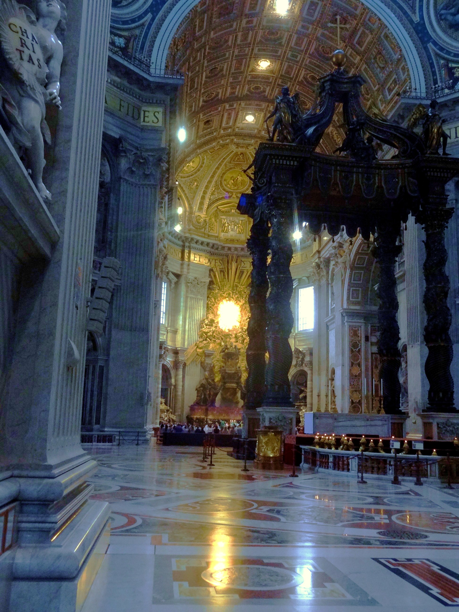 |
| I'm Not Happy with this picture inside St. Peter's. The building sets the benchmark for grandeur, and the camera did not deal with the extreme brightness contrast. The stunning stained glass is wiped out. Gregorian chants were going on in front of the altar. You can see some of the listeners in front. There was once a piece of music so beautiful that it was never performed outside St. Peter's - Allegri's Miserere. It's dense counterpoint for 9 voices. Then a kid heard it and went home and wrote it out from memory. (He grew up to be Mozart.) |